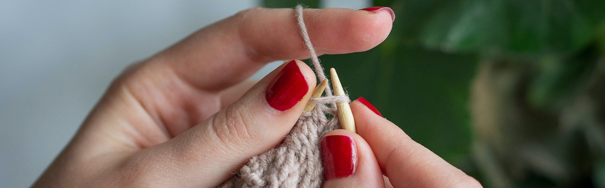
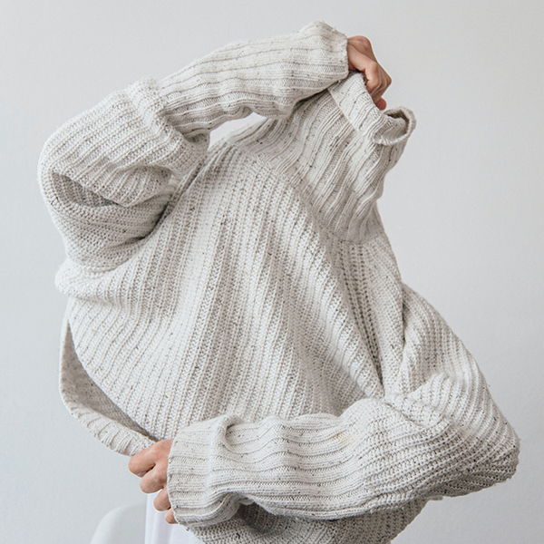

Knitting Can Be Healing I keep hearing about busy women taking up knitting. It's meditative and you have a sweater at the end. Think beyond the Martha Stewart stress on perfection. Remember using your hands to mold dough or bread? In a world where so much of our work is intangible making things with your palms and fingers gives us a feeling of control and mastery and is a way of creating order and beauty. My guess is that one reason we're all so into our electronic gadgets today is because it's a way of playing with your hands.
But knitting can be much better for you than too much texting or web searching or electronic games. Knitters across the world say it's simply the best therapy, but why? Betsan Corkhill, a British physiotherapist, founded an organization in Bath called Stitchlinks to answer that question and promote knitting as a therapeutic practice.
For those of us who are ill, unemployed or bored for various reasons, staying occupied is clearly good for our health, especially when a hobby is connected to a social circle. Knitting has particular benefits. The rhythmic repetitive movements seem to put us in the present moment, distracting us from mulling over the past or fear of the future. The relaxation response is known to bring down blood pressure and heart rate and help to prevent stress-related illnesses.
Research by Dr. Barry Jacobs of Princeton University has found that repetitive movements in animals enhance the release of serotonin, associated with calm good spirits. And it’s common sense: we rock babies in cradles and sit in rocking chairs because rocking has a powerful calming effect.The motion of moving your eyes from side to side may also be helpful in itself, as therapists who use Eye Movement Desensitisation and Reprocessing (EMDR) have found working with trauma victims around the world. Moving your eyes from side to side or rolling them around is a powerful yoga technique. According to Corkhill, some early research has shown that moving your eyes from side to side for 30 seconds every day can boost memory by 10%.
Corkhill sees knitting as a “constructive addiction” that replaces other habits like smoking and binge eating or obsessive checking. One blessing is that you can take your relaxation tool with you and do it in public. And while knitting does not require artistic talent or expensive equipment, it produces objects that people enjoy. Knitters will tell you that just stroking their yarn cheers them up.
In fact, Corkhill reports that many chronically ill, or disabled people who aren’t working or those looking for work can overcome a feeling of aimlessness simply by taking up knitting. Planning a sweater gives them impetus to plan other activities. Knitting also appears to be a pain-reliever. Pain doesn't originate in the spot where you feel it, but actually in your brain, when it interprets signals from other parts of your body. But your brain can't concentrate on two compelling activities at the same time. “Knitting can quite literally take your mind off pain,” Corkhill writes.Finally, if you can learn to relax while knitting, you can remember again what it feels like not to be tense and recall that feeling in stressful situations.
It won't cost you much and it could do wonders. Why not?